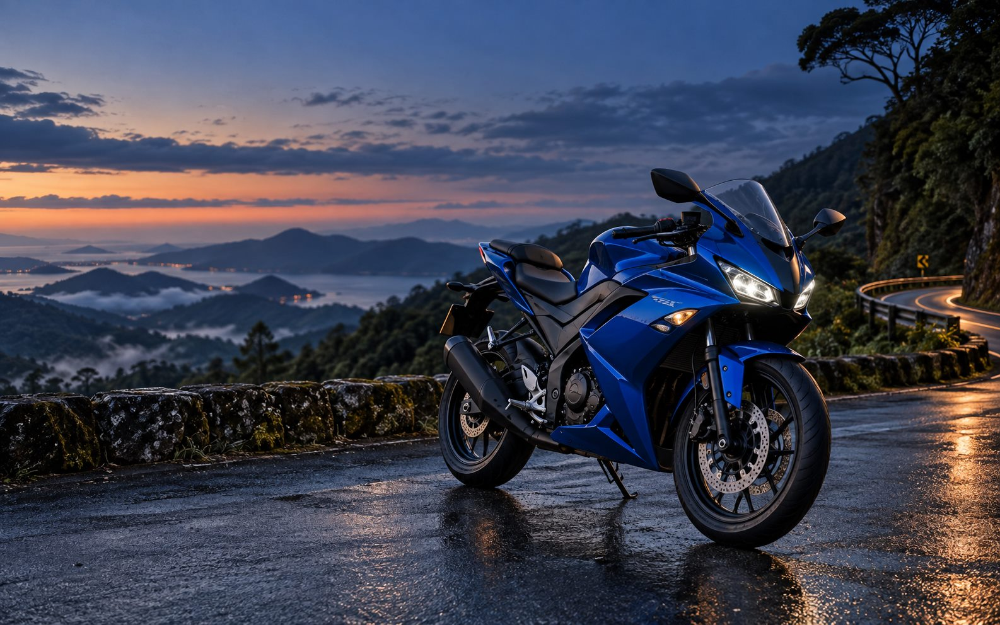
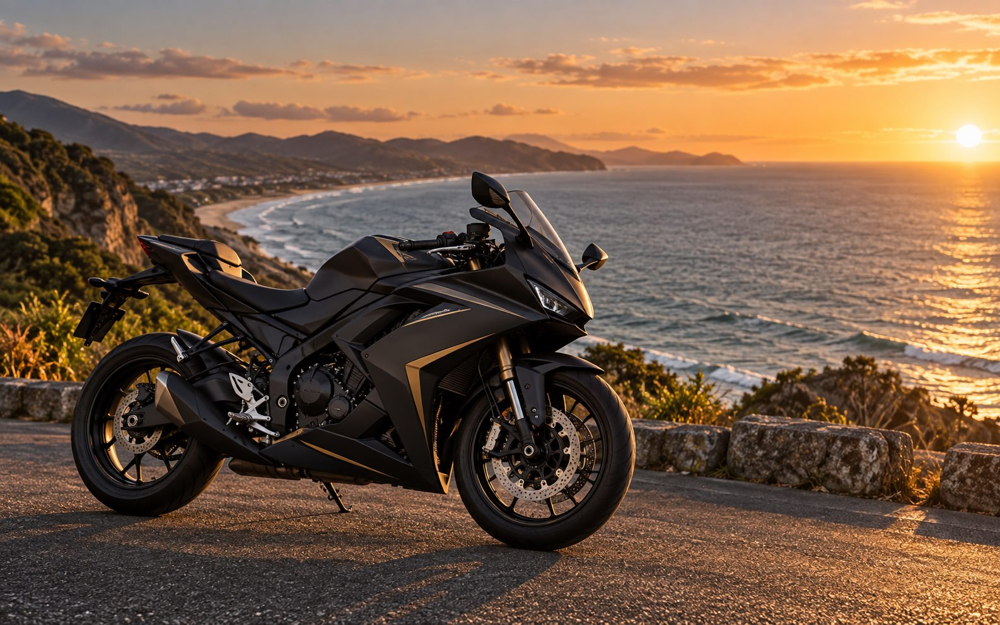
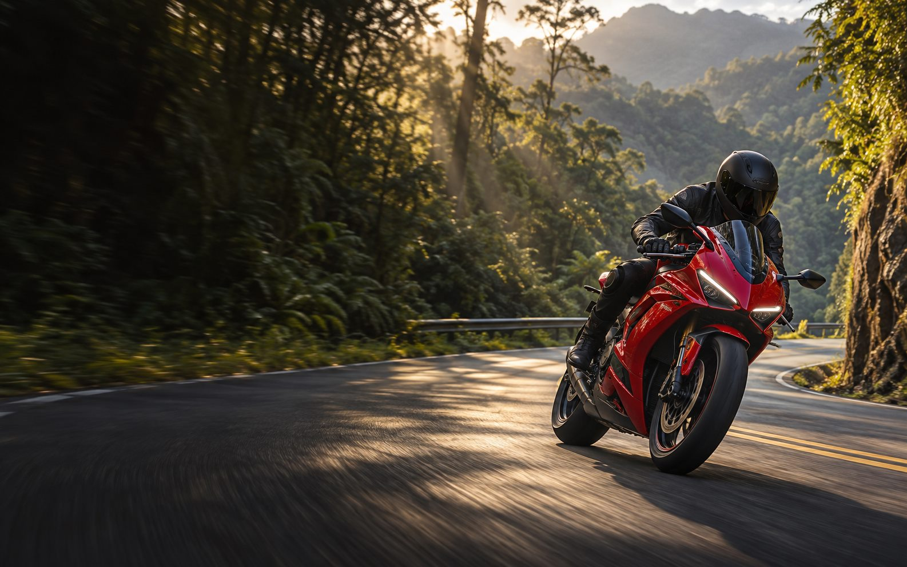

Planejamento antes da partida
Ponto de encontro, horário, trajeto e ritmo são combinados com clareza para todo mundo sair sabendo como será o rolê.
Duas rodas. Uma só tropa.
Bem-vindo à R15 Santa Catarina
Mais do que motos, compartilhamos histórias.
Uma comunidade feita de respeito, parceria e estrada.
VIDA SOBRE DUAS RODAS
Não importa se a moto acabou de chegar à garagem ou se você já coleciona quilômetros. A R15 Santa Catarina nasceu para aproximar pessoas que entendem que pilotar também é compartilhar, aprender e voltar para casa com uma boa história.
Aqui, cada integrante pode encontrar companhia para o próximo destino, trocar experiências sobre manutenção e equipamentos, produzir conteúdo e ajudar quem está começando.
Ponto de encontro, horário, trajeto e ritmo são combinados com clareza para todo mundo sair sabendo como será o rolê.
A tropa roda junta, respeita os diferentes níveis de experiência e não deixa ninguém para trás.
Fotos, vídeos e relatos mantêm a experiência viva e inspiram os próximos encontros pelo estado.
NA ESTRADA / SANTA CATARINA



AGENDA DA TROPA
Carregando a agenda da tropa…
Datas e trajetos podem mudar por causa do clima ou da organização. Confirme sempre as informações antes de sair.
Agenda atualizada pela administração01 / NOSSA ESSÊNCIA
A R15 Santa Catarina reúne quem curte moto, boas estradas e novas amizades. Um espaço para combinar rolês, compartilhar conteúdo, trocar experiências e encontrar motos, peças e acessórios no marketplace da galera. Seja para rodar junto ou trocar ideia, tem espaço para você.
Encontros e rolês para descobrir Santa Catarina com boa companhia.
Fotos, vídeos, dicas e experiências de quem vive a moto no dia a dia.
Interesse em comprar, vender ou trocar? Conecte-se pelo marketplace do grupo.
Uma tropa começa quando a estrada deixa de ser apenas caminho e vira ponto de encontro.
R15 SANTA CATARINA
Cada quilômetro é uma nova história. Cada parada, uma nova amizade. Do litoral às estradas da serra, o destino muda, mas a vontade de rodar junto continua a mesma.
02 / NA MESMA DIREÇÃO
A potência aproxima, mas é a atitude que mantém uma comunidade unida. Estes combinados protegem o clima do grupo, a segurança nos encontros e a confiança entre quem participa.
Toque em cada regra para conhecer os detalhes.
Trate todo mundo com respeito. Ofensas, discriminação, assédio e brigas não têm espaço na tropa.
Use equipamentos de proteção, respeite as leis de trânsito e os limites de cada piloto. Nada de incentivar corridas ou manobras perigosas em via pública.
Compartilhe assuntos ligados a motos e ao grupo. Evite correntes, spam, conteúdo ofensivo e divulgação repetitiva.
Informe preço, estado real e fotos do produto. Combine os detalhes no privado e confira o produto e o vendedor antes de pagar. As negociações são de responsabilidade dos envolvidos.
Peça autorização antes de divulgar dados pessoais, conversas ou imagens de outros integrantes fora do grupo.
Respeite a organização dos encontros e as orientações dos administradores. Se acontecer algum problema, fale com a administração no privado.
ANTES DE LIGAR A MOTO
A diversão nunca vem antes da segurança. Equipamento adequado, moto revisada, documentação em dia e respeito às leis fazem parte de qualquer encontro da tropa.
O grupo não incentiva competição, manobras perigosas ou exposição desnecessária. Cada piloto é responsável por suas escolhas e deve respeitar seus próprios limites.
03 / SEU PRÓXIMO ROLÊ
Conta um pouco sobre você. A gente monta a mensagem e abre o WhatsApp do admin. Você confere e toca em enviar por lá.
Seu formulário não é salvo no site.
Só a preferência de tema fica neste navegador.